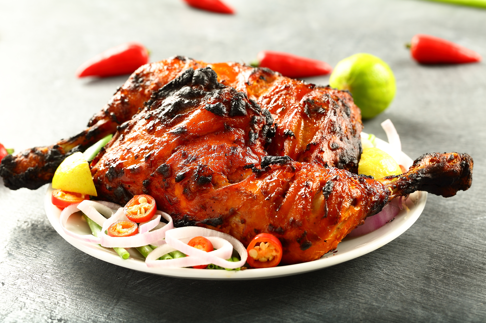
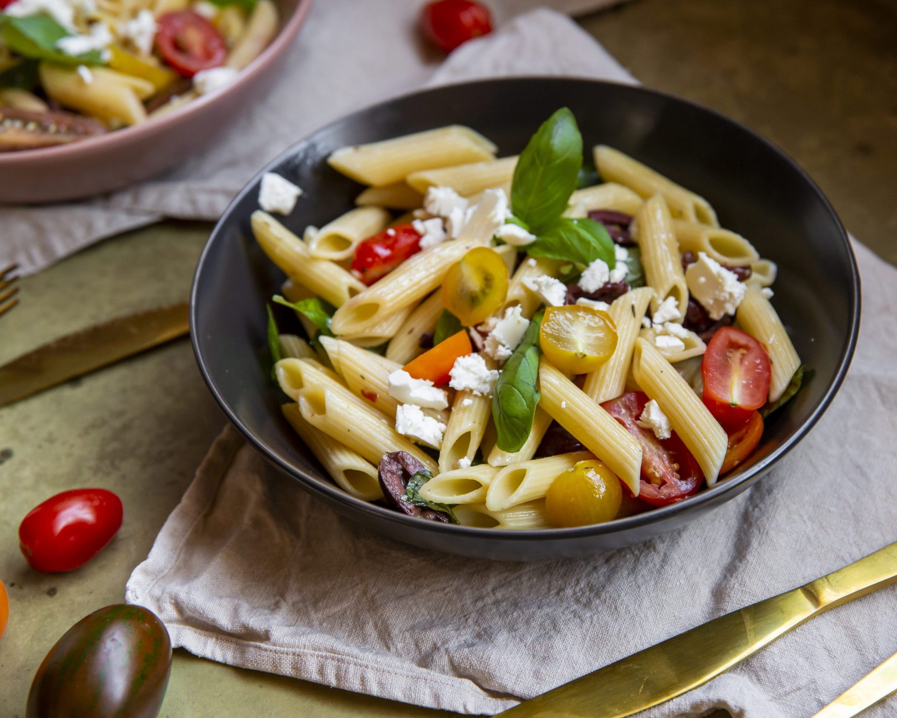
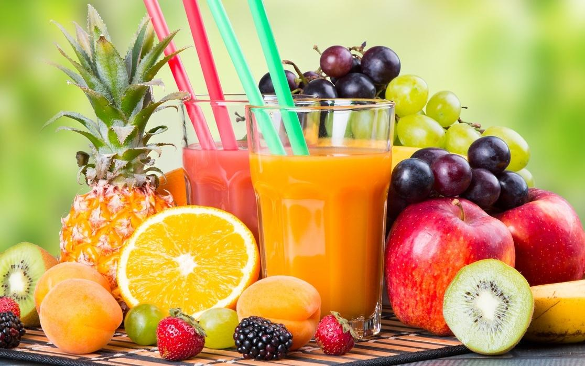

Top 5 Favorite Foods
|  |
Tandoori Chicken |
| Tandoori chicken is a South Asian dish of chicken marinated in yogurt and spices and roasted in a tandoor, a cylindrical clay oven.tandoori chicken, a dish of roasted chicken marinated in yogurt and generously spiced,giving the meat its trademark red colour. It is named for the cylindrical clay oven in which it is cooked, a tandoor. |
Chicken biriyani |

|
| Hyderabadi biryani, also known as Hyderabadi dum biryani, is a style of biryani from Hyderabad, India made with basmati rice and meat (mostly chicken). Originating in the kitchens of the Nizam of Hyderabad, it combines elements of Hyderabadi and Mughlai cuisines.Hyderabadi biryani is spicy and has the distinct flavour of saffron. The Andhra influence on Mughlai food shows itself in the spicy and hot taste of Hyderabadi biryani, which is of two main types: kachchi and pakki. |

|
Breakfast |
| the first meal of the day especially when taken in the morning. the food prepared for a breakfast eat your breakfast. Eggs and bacon that you eat first thing in the morning for your first meal. |
Pasta |
 |
| Pasta is a type of food typically made from an unleavened dough of wheat flour mixed with water or eggs, and formed into sheets or other shapes, then cooked by boiling or baking. Rice flour, or legumes such as beans or lentils, are sometimes used in place of wheat flour to yield a different taste and texture, or as a gluten-free alternative. Pasta is a staple food of Italian cuisine. Both dried and fresh pastas come in a number of shapes and varieties, with 310 specific forms known by over 1,300 documented names. |
|  |
Juice |
| Fruit juice is 100% pure juice made from the flesh of fresh fruit or from whole fruit, depending on the type used. It is not permitted to add sugars, sweeteners, preservatives,flavourings or colourings to fruit juice.Smoothies usually contain crushed fruit, purees and fruit juice to produce a premium fruit juice product. |
Dessert |

|
| These delicious fruit and nut dark chocolate bites are a healthier way to enjoy a chocolatey dessert! This recipe is a very easy and healthy way to enjoy dessert.his recipe is caramel + PB + chocolate deliciousness. |